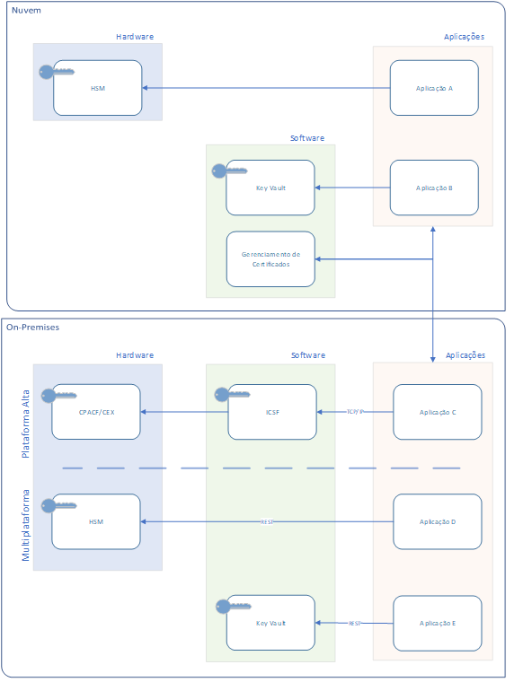
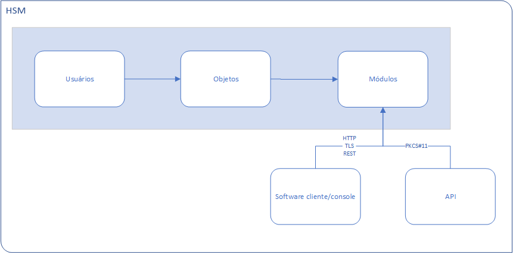
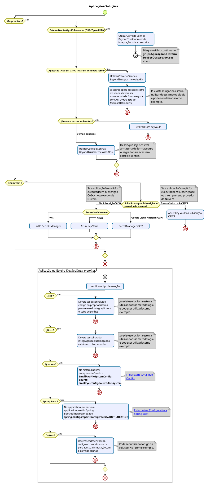
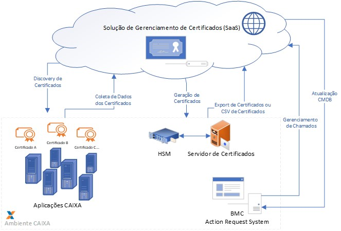

ARQUITETURA DE CRIPTOGRAFIA
O uso de criptografia nos processos tecnológicos tem a finalidade de proteger dados armazenados, ou que transitem pela rede de computadores, provendo os pilares de segurança da informação de integridade e confidencialidade, com o uso de soluções de alta disponibilidade.
Algoritmos de criptografia, também, desempenham um papel fundamental na garantia de segurança dos sistemas de TI e nas comunicações. Eles podem fornecer não apenas confidencialidade, mas também elementos considerados chaves em relação à segurança aos dados:
- Autenticação: a origem da mensagem pode ser verificada;
- Integridade: prova de que o conteúdo de uma mensagem não foi alterado desde que foi enviado;
- Não-repúdio: o remetente de uma mensagem não pode negar o envio da mensagem.
Considerando o pilar de confidencialidade da segurança da informação, senhas, arquivos de configuração que contenham senhas, e demais fatores de autenticação em sistemas devem ser protegidos no armazenamento e na transmissão, com criptografia, preferencialmente por hardware, desde o dispositivo de entrada de dados até o hardware específico de criptografia no ambiente centralizado ou na nuvem.
Em acordo a TE197, a arquitetura de segurança tecnológica determina que todos os sistemas devem obrigatoriamente utilizar o protocolo TLS/SSL para tráfego das informações de autenticação e sessão.
Visão Geral da CAIXA
A Arquitetura de Criptografia da CAIXA aqui descrita, descreve os recursos tecnológicos disponíveis para os processos que envolvem criptografia.
Arquitetura de Referência

1 - HSM – Hardware Security Module (On premises)
No processamento criptográfico, na segurança de chaves e na geração e no armazenamento seguro de chaves criptográficas simétricas e chaves privadas assimétricas, deve-se utilizar preferencialmente hardwares especializados.
Esse hardwares são chamados de HSM (Hardware Security Module) ou, no caso de ambiente mainframe (IBM), Crypto express Card e CPACF (Hardware para funções criptográficas).
A arquitetura de uso do HSM está baseada em princípios de modularidade, separação de partições de chaves, controle de acesso, proteção contra violação, além de uma otimização com o objetivo de oferecer estabilidade e desempenho nas operações criptográficas.
O HSM deve ser utilizado para implementar funcionalidades de criptografia nas situações cujo fluxo da transação não utilize recursos no mainframe IBM para cifragem ou decifragem.
Há três itens básicos na arquitetura do HSM: usuários, objetos e módulos.
-
Usuários são as entidades que solicitam serviços e possuem uma área de armazenamento dentro do HSM; estas áreas também são chamadas de partições de usuários. Também são os usuários que podem abrir sessões de serviço com o HSM. A cada usuário corresponde uma partição no HSM.
-
Objetos são as entidades armazenadas dentro das partições do HSM. Todo objeto está intrinsecamente relacionado a um usuário. Há um tipo especial de objeto, que é aquele que contém material criptográfico, normalmente uma chave de criptografia simétrica ou assimétrica; estes objetos são chamados de chaves e tem um nível de proteção e controle maior que os demais objetos. Os demais objetos podem ser de diversos tipos, como certificados ou cadeias de certificados digitais. Os objetos podem ainda ser temporários, que são objetos não persistentes entre sessões, ou seja, existem apenas durante a sessão, sendo removidos pelo HSM ao fim desta, como por exemplo, chaves criptográficas de sessão. Todos os objetos serão mantidos cifrados internamente por uma chave mestra (Server Master Key) na área de memória persistente e só são decifrados quando há requisição válida de acesso e sempre para uma memória volátil. A Master Key também é utilizada, juntamente com dados específicos de um dispositivo como número de série, data e hora da transação, para gerar chaves derivadas ou chaves de sessão.
-
Módulos são as unidades provedoras de serviços dentro do HSM, cada um responsável por uma especialidade. Dentro dos módulos estão as implementações de algoritmos criptográficos ou genéricos. Existe uma interface bastante rígida de comunicação com cada módulo, expostas aos usuários através das APIs na biblioteca de funções do HSM. Como interfaces de comunicação possíveis de integração com o HSM:
- MS Crypto API
- PKCS#11
- API Nativa (criptografia, gerência e monitoramento)
- Java JCA/JCE
- API Nativa SPB – Sistema de Pagamentos Brasileiro
- REST
Desenho da arquitetura do HSM:

Indicações de uso: O HSM deve ser utilizado quando, no fluxo da transação, o sistema que faz a solicitação de cifragem ou decifragem de dado secreto não está hospedado no ambiente de mainframe IBM. Sempre que possível, deve-se utilizar a criptografia fim-a-fim, desde a entrada de dados até o HSM, principalmente, quando for trafegada senha ou biometria.
Exemplos: Nas situações de fluxos nos quais ocorre digitação de senhas pelos clientes ou pouso da impressão digital, com armazenamento da senha ou da impressão digital no ambiente centralizado da CAIXA (a cifragem e decifragem dessas senhas será feita utilizando chaves protegidas pelo HSM). Nas situações em que dados secretos precisam ser armazenados após cifragem com chaves criptográficas que não podem ser acessadas diretamente por nenhum empregado ou sistema. Nas situações em que serão utilizadas chaves mestras no HSM para geração de chaves derivadas e chaves de sessão. Sendo assim, estando hospedada no HSM, a chave mestra não será comprometida.
Situação atual: A CAIXA possui o HSM Dinamo.
2 - HSM – Hardware Security Module (Nuvem)
Descrito na página de Nuvem junto com o serviço Azure Key Vault.
3 - ICSF – IBM Cryptographic Service Facility com IBM Crypto express Card e Hardware IBM para funções criptográficas
ICSF é um software do sistema operacional IBM Z/OS para mainframe IBM que trabalha com funcionalidades de hardware criptográfico e RACF (Resource Access Control Facility) - responsável pela implementação de segurança no z/OS, efetuando o controle de acesso dos usuários aos recursos do sistema e a outros recursos.
O ICSF provê segurança e serviços criptográficos com alta performance no ambiente Z/OS.
O ICSF provê API por meio das quais aplicações requisitam os serviços criptográficos.
As vantagens de utilização do ICSF são a alta performance e disponibilidade 24X7 sem necessidade de paradas para manutenção de atualização, como ocorrem de firmware de HSM, que requerem a parada das funções que utilizam o HSM durante a atualização. ICSF e recursos de hardware criptográfico da IBM podem ser utilizados para implementar as seguintes funcionalidades de segurança de sistemas que estão sob o z/OS e mainframe IBM: - Confidencialidade dos dados pela cifragem e decifragem.
-
Segurança para personal identification numbers (PINs).
-
Assegura a integridade de dados pelo uso de modification detection codes (MDCs), funções hash e assinaturas digitais.
-
Assegura a privacidade de chaves criptográficas pela cifragem das chaves usando uma chave mestra ou chave de cifragem de chave.
-
Gerenciamento das chaves criptográficas para que cada qual seja utilizada para seu propósito.
-
Assegura disponibilidade contínua.
-
Implementa os seguintes algoritmos criptográficos: Rivest-Shamir-Adelman (RSA), Digital Signature Standard (DSS), Elliptic Curve Cryptography (ECC) com chaves públicas e privadas em uma plataforma de múltiplas aplicações e múltiplos usuários.
-
Provê a capacidade de gerar pares de chaves RSA e ECC com as funções do hardware seguro da IBM.
Indicações de uso: O ICSF e hardware de criptografia da IBM devem ser utilizados quando, no fluxo da transação, o sistema que faz a solicitação de cifragem ou decifragem de dado secreto está hospedado no ambiente de mainframe IBM. Sempre que possível, deve-se utilizar a criptografia fim-a-fim, desde a entrada de dados até o Hardware IBM de criptografia, principalmente, quando for trafegada senha ou biometria.
Situação atual: A CAIXA já possui hardware IBM de criptografia e software ICSF com suporte tecnológico para o uso atual.
4 - Key Vault (cofre de senhas)
Os cofres de senhas são aplicativos que armazenam, de forma simples e segura, dados de autenticação ou chaves criptográficas. Assim, as informações confidenciais não devem estar registradas no código ou mesmo gravadas em arquivos de configuração da aplicação, sendo gerenciadas por um ente externo de forma segura.
Vault (cofre) é um local de armazenamento, do tipo contêiner, criptografado.
Indicações de uso:
Aplicações on-premises:
-
Para aplicações no ambiente de esteira DevSecOps (Kubernetes, OKD/OpenShift), a utilização do cofre de senhas é obrigatória. Será realizada por meio de integração nativa do ambiente da esteira com o cofre de senhas da BeyondTrust;
-
Para aplicações .NET em IIS ou .NET em Windows Server, deve ser realizada integração com o cofre de senhas da BeyondTrust por meio de APIs. O segredo para acessar o cofre de senhas deverá ser armazenado de forma segura com API DPAPI-NG do Microsoft Windows;
-
Para aplicações JBoss em outros ambientes, deve ser utilizado JBoss KeyVault como mecanismo seguro de gerenciamento de segredos;
-
Para os demais cenários, deve ser realizada integração com o cofre de senhas da BeyondTrust por meio de APIs; desde que seja possível armazenar de forma segura o segredo (também conhecido como o primeiro segredo ou segredo zero) que é necessário para utilizar as APIs de acesso ao cofre.
Aplicações na nuvem:
-
Para aplicações em nuvem Azure, deve ser utilizado o serviço Azure Key Vault (descrito na página de Nuvem junto com o serviço Azure Key Vault);
-
Para aplicações em nuvem Amazon Web Services (AWS), deve ser utilizado o serviço AWS Secrets Manager;
-
Para aplicações em nuvem Google Cloud Platform (GCP), deve ser utilizado o serviço Secret Manager da GCP;

5 - Gerenciamento de certificados SSL
Os certificados digitais são o mecanismo padrão para a proteção de dados em sites da Internet. São os certificados digitais que garantem a autenticidade do site, além da integridade e da confidencialidade dos dados em trânsito entre o cliente e o provedor do serviço na Internet, porque as chaves criptográficas públicas dos certificados digitais permitem a implementação da criptografia dos dados que trafegam em uma conexão SSL.
As funcionalidades principais que serão providas pelo gerenciamento de certificados SSL são as seguintes:
- Gerenciamento centralizado dos certificados SSL, incluindo o controle do prazo de validade e verificação de obsolescência de algoritmos criptográficos e tamanhos de chaves.
- Possui integração com o CMDB da CAIXA, de modo a comportar as propriedades indicadas no IC “Certificado Digital” do CMDB. Sempre que um certificado for renovado ou emitido, o CMDB deve ser automaticamente atualizado.
- Integração com o HSM para a solicitação automática de geração do par de chaves RSA direto no HSM, com posterior abertura de Mudança para a instalação do certificado.
Desenho da arquitetura da solução de gerenciamento de certificados SSL

Indicações de uso: Os certificados digitais utilizados pela CAIXA deverão ser gerenciados pela solução a ser contratada.
Situação atual: Controle feito por planilha eletrônica na CECMI, sem inventário completo. (Solução especializada em processo de contratação)
Situação futura: Contratação de solução de mercado para inventariar, controlar a validade e alertar quando estiver próximo o vencimento da validade do certificado digital.
6 - Boas práticas
Para o pleno aproveitamento dos recursos de hardware de criptografia citados neste documento de arquitetura, os periféricos de entrada de dados do tipo teclado e leitor biométrico precisam ser adquiridos com funcionalidade de criptografia no hardware e proteção das chaves com certificação FIPS 140-2.
Precisam ser realizadas adequações sistêmicas para o bom aproveitamento dos periféricos de entrada de dados do tipo PIN PAD com funcionalidade de criptografia no hardware que já foram adquiridos e como preparação para a adequação quando forem adquiridos os demais equipamentos, sendo assim, ocorrerá a criptografia fim-a-fim com a respectiva decifragem acontecendo no hardware de criptografia do ambiente centralizado.
Histórico da Revisão
| Data | Versão | Descrição | Autor |
|---|---|---|---|
| 24/02/2026 | 1.5 |
Incluir em formas de integração com Cofre de Senhas para aplicações on-premises:
|
Mário Sérgio Fujikawa Ferreira (C101038) - SUART08 |
| 03/03/2026 | 1.6 | No diagrama de formas de integração com Cofre de Senhas, remover a palavra chave 'optional:' de configtree, pois a configuração é obrigatória. | Mário Sérgio Fujikawa Ferreira (C101038) - SUART08 |
| 03/03/2026 | 1.7 |
|
Mário Sérgio Fujikawa Ferreira (C101038) - SUART08 |